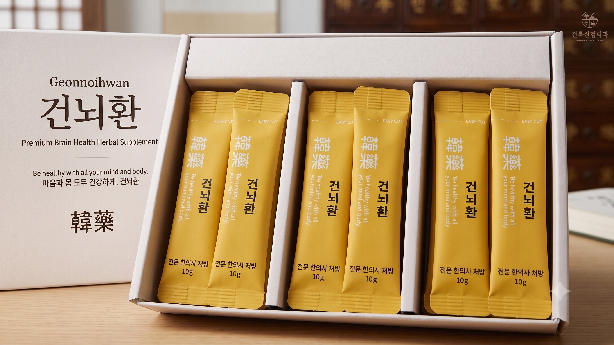
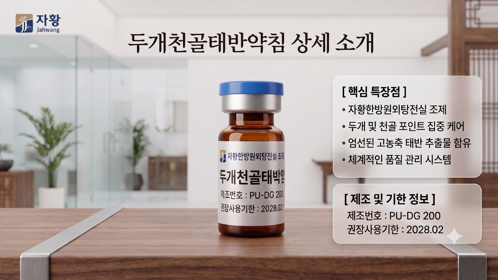

기억력 저하와 뇌 피로, 방치하지 마세요.
굳어진 두개골을 이완시키는 '두개천골태반약침'과 뇌혈류 순환을 돕는 맞춤 '건뇌환'으로 신경 인지 기능 개선을 돕습니다.
나이가 들거나 치매가 진행될수록 뇌혈류 순환이 저하될 뿐만 아니라, 두개골이 볼링공처럼 딱딱하게 굳고 두피가 얇아집니다. 우성한의원 건뇌 클리닉은 두개골 봉합선의 미세한 움직임을 회복시키는 두개천골태반약침 치료와 뇌의 노폐물 배출을 돕는 건뇌환을 병행하여 근본적인 뇌 건강 관리를 지향합니다.
아래 항목 중 3가지 이상에 해당하신다면, 두뇌 건강을 위한 예방적 관리가 필요할 수 있습니다.

동의보감 및 전통 한의학의 지혜를 바탕으로, 뇌신경 활성화와 인지 기능 개선에 도움을 줄 수 있는 엄선된 한약재로 조제된 환약입니다.

치매 환자나 난치성 질환자의 얇아진 두피에 거름을 주고, 딱딱하게 굳은 두개골 봉합선의 움직임을 회복시키는 특수 약침입니다.
주소: 경기도 고양시 일산서구 고양대로 726, 4층 우성한의원
주차 안내: 일산제1공영주차장 (지도상 건물 우측 이용 시 1시간 정산 지원)
• 평일: 09:30 ~ 19:00 (점심 13:00 ~ 14:00)
• 목·토: 09:30 ~ 14:00 (점심시간 없이 연속진료)
• 일요일 및 공휴일: 휴진